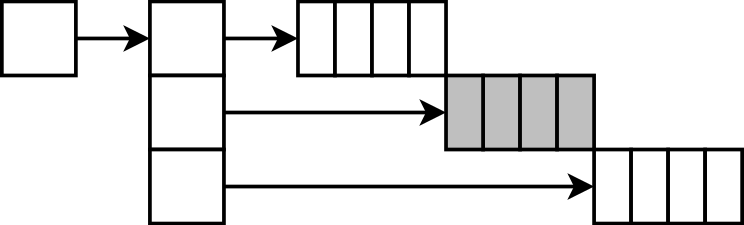
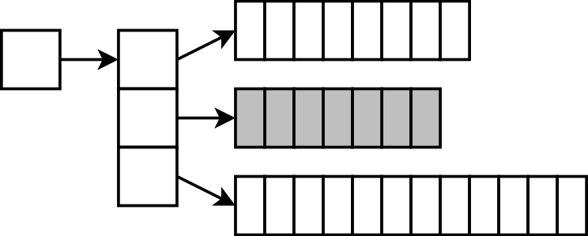

1Pointer emlékeztető – mutatók használata
Mutatók létrehozása, cím képzése, indirekció
int i, *pi; pi = &i; i = 2; *pi = 2; char c, *pc; pc = &c; putchar(c); putchar(*pc);
A pointer egy változó címét (helyét) tárolja a memóriában. Egy
adott változóra ez a cím az & operátorral képezhető,
és a pointerben eltárolható. Így a pointer gyakorlatilag az adott
változóra hivatkozik, rajta keresztül elérjük a változót, aminek
a címét képeztük. Ha a pointert dereferáljuk a *
operátorral, akkor a változót kapjuk meg, amelynek értéke írható
és olvasható is a pointeren „keresztül”. Vagyis a dereferált
pointer is lehet balérték.
A pointer típusához hozzátartozik a mutatott változó típusa is, pl.
egészre mutató pointer típusa int*, karakterre mutató
pointer típusa pedig char*. Erre két dolog miatt van
szükség:
- Egyrészt így válik értelmessé a dereferálás, hiszen az csak akkor értelmes művelet, ha tudjuk, hogy milyen típusú adatot hivatkozunk a memóriában. A helye önmagában ehhez kevés.
- Tömbök esetén a típus ismerete ad lehetőséget a pointer aritmetikára: kiszámítható, hogy a következő elem hol van. Annyi bájttal van arrébb a tömb kezdetéhez képest, ahány bájtos egy elem.
Ezért működnek úgy a tömbök, hogy egyforma típusokat lehet csak tárolni
bennük. Nem lehet egy tömbben összevissza mindenféle, int,
double, struct Pont stb. típusú
adat, hiszen ezek eltérő méretűek, és nem lehetne könnyen kiszámítani,
hogy melyik elem hol található a memóriában.
Cím szerinti paraméterátadás
void pluszegy(int *hova) {
*hova += 1;
}
int x = 2; pluszegy(&x);
2Pointer emlékeztető – címaritmetika
int tomb[4], *pi; pi = tomb; // &tomb[0] pi[2] = 4; // *(pi+2)=4 tomb[1] = 2;// *(tomb+1)
A tömb elemei helyének kiszámítására azért van lehetőség, mert tudjuk, hogy azok egymás mellett helyezkednek el a memóriában. A fordító e célból pontosan így helyezi el őket a memóriában.
Akkor is ez történik, amikor az indexelő operátort használjuk; akár pointeren, akár egy tömbön magán. Kiszámítódik az adott elem címe, utána pedig az így keletkező pointer dereferálódik. C-ben így működik a tömbök paraméterként átadása is, ahogyan az a következő forráskódokon látható.
void tomb_kiir(int *tomb, int meret) {
int i;
for (i = 0; i < meret; ++i)
printf("%d ", tomb[i]);
}
int tomb[10]; tomb_kiir(tomb, 10);
Akár változót adunk át cím szerint, akár egy tömböt a függvénynek, mindkét
esetben egy pointer adódik át. Önálló változó esetén ezt a pointert a *
operátorral dereferáljuk a függvényben, és így elérjük a változót.
Tömbök esetén elvileg egy címszámítás és egy dereferencia kell (*(tomb+i)),
de ilyen operátorokkal írni felesleges, sőt értelemzavaró, mert ehelyett találták ki az indexelő operátort.
Az itt bemutatott működés kellemetlen tulajdonsága az, hogy akár tömböt adunk át, akár önálló változóra mutató pointert, mindkét esetben a paraméter típusa mutató. Ezért ha látunk egy ilyen függvénydeklarációt:
void fuggveny(int*);
akkor ránézésre nem tudjuk megmondani, hogy ez a függvény egy darab integert vár cím szerint, vagy egy tömböt. Tömb esetén ezért a definiálatlan méretű tömbparamétert szokták használni néha:
void fuggveny(int[]);
De ez tökéletesen ugyanazt jelenti a fordító számára, mint az előbbi. Vagyis ilyenkor is egy pointer adódik csak át, és ilyenkor sem másolódik le a tömb, hanem az eredetit látjuk! Ezért ez a forma meg ilyen szempontból lehet kicsit megtévesztő.
3A const kulcsszó
/* a világ utolsó C bugja */
while (1) {
status = GetRadarInfo();
if (status = 1)
LaunchMissiles();
}
Nem mindig szeretnénk, ha a cím szerint átadott változót meg tudná változtatni a függvény!
Például egy kereső függvénytől nem várjuk, hogy megváltozzon a hívás során a tömb értéke, és ha ilyet hibázunk, arra a fordító sem figyelmeztet. Előfordulhat, hogy egy nagy struktúrát cím szerint adunk át egy függvénynek – nem azért, hogy meg tudjuk változtatni, hanem csak mert nem szeretnénk feleslegesen lemásolni, mert az nagyon lassítaná a programunkat.
A const kulcsszóval tudjuk jelezni egy adatnál, hogy
azt nem szabad megváltoztatni.
void kiir(int const *tomb, int meret);
int tomb[100] = { … … … };
kiir(tomb, 100); // int* → int const*
struct Rajz { … … … };
void rajzol(Rajz const *r);
Rajz r;
rajzol(&r); // Rajz * → Rajz const *
int const * – ez azt jelenti, hogy ez a mutató
konstans integerekre mutat. Vagyis hogy meg lehet hivatkozni
a mutatott értékeket (a tömb elemeit), és ki is lehet olvasni azokat,
de változtatni nem lehet rajtuk. Vagyis pl. egy értékadást nem fog
engedni a fordító, hanem fordítási hibával visszadobja a programot.
Az ilyen mutatókat kétféleképpen szokták írni: int const *
és const int *. Mind a kettő ugyanazt jelenti: a pointer
által mutatott integereket konstansnak tekintjük. Az utóbbi időben
elterjedtebb az int const forma, mert az logikusabb,
ha mindig azután írjuk, hogy const, ami konstans. (Pl.
int * const azt jelenti, hogy az integereket lehet
változtatni, de a pointert nem lehet máshova állítani: *p=2
szabad, p++ viszont nem. Erről a második
félévben lesz szó részletesebben.)
A függvényhívás helyén a tömb kezdőcíme elvileg int *
típusú. Ezt a fordító automatikusan konvertálja int const *-gá;
ilyenkor persze igazából semmi nem történik, ez csak egy jelzés, hogy
a függvényen belül már tilos a változtatás. Egy adott típusról
ugyanolyan típusú konstanssá automatikus a konverzió. A másik irányba
viszont értelemszerűen tiltott: ha egy konstans pointer sima pointerré
alakulhatna vissza automatikusan, akkor az egésznek semmi értelme
nem lenne.
A konstansoknak egyébként kiváló „öndokumentáló” szerepük is van. Ha olvassuk a kódot, és látjuk valamiről, hogy konstans, akkor hamarabb megértjük a program működését – hiszen egyből látjuk, mi a konstans, és mi a változó.
4Const kulcsszó általában
A karbantarthatóság egyik alapfeltétele: az olvashatóság.
for (y = 0; y < 480; ++y)
for (x = 0; x < 640; ++x)
putpixel(x, y, 133, 224, 89);
int const KepMag = 480;
int const KepSzel = KepMag/3*4;
Szin const sz1 = { 133, 224, 89 };
for (y = 0; y < KepMag; ++y)
for (x = 0; x < KepSzel; ++x)
putpixel(x, y, sz1.r, sz1.g, sz1.b);
Ha a programunkat egy másik felbontásra szeretnénk átállítani, elegendő mindössze a két konstans értékét felülírni és a következő fordításnál már minden algoritmus az új értékekkel fog dolgozni.
Ha a konstansok helyett számokat használtunk volna, akkor minden előfordulásnál felül kéne írni őket. Ez fáradságos munka, és hibalehetőségeket is rejt magában: elég egy helyen elfelejteni az átírást, és egy nehezen megtalálható hibát vittünk a programba.
A konstansok „furcsa állatok”. Ezek tulajdonképp konstans
változók: az oxymoron mindkét fontos tulajdonságukat kifejezi.
Konstansok, mert a létrehozás után már nem lehet őket megváltoztatni.
Változók, ugyanúgy van helyük a memóriában, értéket kaptak a
létrehozásuk pillanatában – és nem lehet velük tömb méretét megadni!
Az utóbbi ok miatt konstans egészeket gyakran az enum kulcsszóval
hozunk létre, bár az eredendően nem erre való.
Dinamikus memóriakezelés
6Memóriakezelés: a három gondunk
int tomb[1000], i, n;
printf("Hány szám? ");
scanf("%d", &n);
for (i = 0; i < n; ++i)
tomb[i] = …
1. A program írásakor nem tudjuk előre, mennyi memória kell.
- Pl. a felhasználó mondja meg, mennyi adat lesz.
- Felülbecsüljük? Alulbecsüljük?
Ha felülbecsüljük a tömb méretét, túl sok memóriát használ a programunk feleslegesen. Ha alulbecsüljük, akkor pedig egyszerűen nem fog működni: túlindexelés lesz benne.
char *beolvas(void) {
char s[200];
gets(s);
return s;
}
2. Nem tudjuk kontrollálni az élettartamot.
- Globális változó: „örökké” létezik
- Függvény lokális változója: csak a függvényen belül létezik
Az élettartam problémája: például egy globális változó akkor
is létezik, ha éppen nincs rá szükség, és ilyenkor feleslegesen foglalja a
memóriát. A lokális változó meg megszűnik, ezért ott nem tudunk eredményt
létrehozni a hívó számára – hacsak nem másoljuk le. A fenti
beolvas() függvény kifejzetten hibás: a függvényből visszatérve
megszűnik az s[] tömb, ezért az arra mutató pointer érvénytelenné
válik.
3. A hatalmas tömb, amit szeretnénk, nem fér a verembe.
A lokális változókat tároló, verem nevű memóriaterület általában viszonylag kicsi szokott lenni. Nem jó ötlet ezért túl nagy tömböket használni lokális változóként, mert azt a memóriaterületet fogjuk elhasználni, amire szükségünk van a függvényhívások kivitelezéséhez!
7Dinamikus memóriakezelés: célok
Mi dönthetjük el:
- Mennyi memóriát foglalunk
- Mikor foglalunk memóriát, és mikor szabadítjuk fel
Vagyis a kezünkbe kerül minden.
A „dinamikus memóriakezelés” azt jelenti, hogy egyes memóriaterületek foglalását és felszabadítását mi vezéreljük a programból. A „dinamikus” szó az időre utal.
Mindennek van ára…
A fentiekért cserébe a saját felelősségünk
- a foglalás, és
- a felszabadítás is.
Ha elfelejtjük megtenni, a programunk folyton növekszik, és előbb-utóbb le kell állítani…
- Ez vagy a felhasználónak kellemetlen,
- Vagy nekünk, ha ezt az operációs rendszer kénytelen megtenni.
Gondoljunk bele, a dolog néha kényelmetlen, ugyanakkor nagyon hasznos tud lenni. Ha egy adott memóriaterületre csak egy bizonyos ideig van szükség, akkor lefoglalhatjuk csak akkor, amikor először kell, és felszabadítatjuk, amikor már nem kell. Így a programunk kevesebb memóriát foglal.
Másrészt pedig nem kell pazarlóan felülbecsülnünk a méretet, és nem kell attól sem félni, hogy alulbecsüljük azt a program tervezése során. Amikor már tudjuk, mennyi memória kell, csak akkor foglalunk. Például két sztring összefűzve: megnézzük a két összefűzendő sztring hosszát, és az alapján tudjuk, hogy az összefűzött számára mennyit kell foglalnunk. Vagy megnyitunk egy fájlt, megnézzük, milyen hosszú, lefoglalunk annyi memóriát, és beolvassuk az egészet.
8A malloc() és a free() függvény
A malloc() és free() függvénypárost
biztosítja a C nyelv a dinamikus memóriakezelés megvalósítására.
void *malloc(size_t méret)
Lefoglal egy bájtban megadott méretű memóriaterületet (malloc: memory allocation).
- Visszaad egy pointert a legfoglalt területre, ami
méretbájtból áll. - A terület inicializálatlan (memóriaszemét).
- Azért
void*, mert nem ismeri a típusunkat. - Ha nem sikerül, akkor
NULLpointert ad.
void free(void *ptr)
Felszabadít egy memóriaterületet, amit a malloc() foglalt.
- A
malloc()által adott címet kell neki adni.
A malloc() és free() játékszabályai
Az alábbi játékszabályokat tökéletesen kell érteni, a legutolsó bitig. A be nem tartásuk a legsúlyosabb programozási hibák közé tartozik!
- A lefoglalt memóriaterületet fel kell szabadítani.
Ahánymalloc()hívás, annyifree()hívás kell történjen.
- A
malloc()által adott pointer szemünk fénye!
Ha elveszítjük, nem tudjuk majd azt a területet visszaadni.
- Allokálatlan memóriaterület nem használható!

char *szoveg; szoveg[2] = 'x';
Ha nem foglaltuk le, akkor még nem.
free(szoveg); szoveg[2] = 'x';
Ha felszabadítottuk, akkor már nem.
9malloc(), free(): példák
Nem tudjuk, mekkora tömb kell
Feladat: írjunk programot, amiben a felhasználó bárhány számot tud adni; ezeket mind tároljuk el!
#include <stdlib.h>
double *tomb; // ptr a majdan lefoglalt területre
int i, n;
printf("Hány számot? ");
scanf("%d", &n);
tomb = (double*) malloc(n*sizeof(double)); // foglalás
if (tomb == NULL) {
printf("Nem sikerült memóriát foglalni!\n");
return 1;
}
tomb[3] = 12; /* tesszük a dolgunkat */ // ez egy tömb!
free(tomb); // felszabadítás
tomb = NULL; /* kell ez? */
A lefoglalt területre egy void* mutatót kapunk.
Ez azért mutat void, vagyis ismeretlen típusra,
mivel a malloc() nem tudja, milyen típusúak
a lefoglalt területen tárolt adataink. (Nem is tudhatja, hiszen
a malloc() a nyelvbe van beépítve, vagyis nem lehet
felkészítve az összes általunk létrehozott típusra, pl. a
saját magunk által definiált felépítésű struktúrákra.)
Ezt a void* típusú pointert átalakítjuk a saját
típusunkra mutató pointerré (type cast), pl. jelen esetben
double* típusúvá, és így tároljuk el a
változónkban.
Mivel a malloc() semmit nem tud a lefoglalt
területünkről, a méretét nekünk kell kiszámítani, és bájtokban
megadni. Itt egy tömböt foglalunk, ezért a legegyszerűbben
ezt egy szorzással tehetjük meg. A sizeof
operátor egy adott típus
méretét bájtban megadja; pl. sizeof(double)
annyi lesz, ahány bájtos egy double szám.
Ha ezt megszorozzuk a tömb elemszámával, akkor éppen a kérdéses
méretet kapjuk. A lefoglalt terület inicializálatlan, vagyis memóriaszemetet
tartalmaz.
Innentől kezdve a pointeren keresztül el tudjuk érni a memóriaterületet. Kényelmes itt nagyon, hogy a pointereken is használható az indexelő operátor, hiszen a használat közben nem is kell foglalkozni vele, hogy a tömb statikusan vagy dinamikusan lett lefoglalva; ugyanúgy működik az indexelő operátor, ugyanúgy átadható függvénynek (hiszen a tömbös függvények eddig is pointert vártak) és így tovább. Túlindexelni természetesen továbbra sem szabad.
Ha végeztünk, és már nincsen szükség az adatokra, akkor visszaadjuk
a lefoglalt területet. Ehhez átadjuk a free() utasításnak
azt a pointert, amit a malloc()-tól kaptunk (ezzel
azonosítja, hogy melyik területről van szó). Elvileg ugyan a free()
egy void* típusú pointert vár, de ilyenkor a típus
konverzióját nem kell elvégezni, mert a valami*→void*
konverzió automatikus. Miután felszabadítottuk a memóriaterületet, már
nem szabad hivatkozni azt! Hiszen azt egy másik malloc()
hívás másra használhatja, vagy bármi más történhet vele. Ha így teszünk,
az nagyon súlyos hiba! Mivel azonban a pointer megmarad, érdemes lehet azt
NULL-ra állítani, hogy észre tudjuk venni ezt a programozási hibát.
A C nyelv újabb, de nem minden fordító által elfogadhatóan támogatott verziójában, a C99-ben
lehetőség van arra, hogy malloc() hívás nélkül hozzunk létre olyan tömböt, amelynek
mérete futási időben derül ki. Ilyen tömb természetesen csak függvény lokális változója lehet,
és bár a mérete nem fix, de az élettartama igen, hiszen a függvényből visszatérve meg fog
szűnni. Vagyis a fentit C99-ben akár így is írhatjuk (természetesen a free() hívást
is elhagyva):
printf("Hány számot? ");
scanf("%d", &n);
double tomb[n];
…
A változóval megadott méretű tömböket a különböző programozási nyelvek vagy támogatják, vagy
nem. A Pascal és a C89 nem támogatja, a C99 és a C++ igen. A programunk tervezésekor figyelembe
kell vennünk, hogy egy meg nem adott méretű tömböt esetleg dinamikus memóriakezeléssel tudunk
csak majd megvalósítani a választott programozási nyelven. Figyelembe kell vennünk azt is, hogy
a verem mérete általában jóval kisebb, mint a dinamikusan, malloc()-kal foglalható
memória mérete. Így ezt csak kisebb tömbökre használhatjuk. További peremfeltétel, hogy
bár a veremben, automatikus lokális változóként hozható létre így tömb, adatszerkezet része
(pl. struktúrában) továbbra sem lehet ilyen.
Kontrollálnunk kell az élettartamot is
Feladat: írjunk függvényt, amely összefűz két, paraméterként kapott sztringet! A függvény visszatérési értéke legyen az összefűzött sztring!
char *s;
s = osszefuz("alma", "fa");
...
Ebben dinamikus memóriakezelést kell használnunk. Nem csak azért, mert nem tudjuk előre, hogy mekkora lesz a tömb, hanem azért is, mert a függvényből visszatérve a lefoglalt tömbnek meg kell maradnia. Az semmiképpen nem lehet a függvény lokális változója!
/* visszatér egy sztringgel, ami s1 és s2 összefűzve.
* a hívónak fel kell szabadítania a kapott sztringet! */
char *osszefuz(char const *s1, char const *s2) {
int mennyi;
char *res;
mennyi = strlen(s1)+strlen(s2)+1;
res = (char*) malloc(mennyi * sizeof(char));
if (res == NULL) /* ha nem sikerült a malloc() */
return NULL;
strcpy(res, s1);
strcat(res, s2);
return res;
}
Látható, hogy így meg tudjuk oldani az élettartam problémáját is.
A függvényből visszatérve ugyanis az új sztringet tároló memóriaterület
nem szabadul fel automatikusan, hanem a hívó döntheti el, hogy
mikor nincsen már a továbbiakban szüksége arra. Vissza
ez a függvény nem a sztringet adja, hanem csak egy pointert a lefoglalt
memóriaterületre. A lokális char* res változó
ugyan megszűnik, de azt a visszaadáskor lemásoljuk! (Csak a pointert!
Nem az egész tömböt!)
Amikor visszatérünk, a létrehozott tömb így nem szűnik meg! A pointer ugyan igen, de azt visszaadjuk, és a hívónak azt el kell tárolnia magának.
10malloc(), free(): a terület tulajdonosa
Ha a hívó dolga a felszabadítás, azt a tényt dokumentálni kell!
/* visszatér egy sztringgel, ami s1 és s2 összefűzve. * a hívónak fel kell szabadítania a kapott sztringet! */ char *osszefuz(char const *s1, char const *s2);
char *s;
s = osszefuz("alma", "fa");
printf("Ezt írtad be: %s\n", s);
free(s); // !
s = NULL; /* a biztonság kedvéért */
A függvény visszatér egy pointerrel a lefoglalt területre. Valakinek
a foglalt területet fel is kell szabadítania – a hívó felel érte, hogy fel legyen
szabadítva. Fontos figyelni arra, hogy ezt megtegyük,
ha már nincsen rá szükség. Mivel az osszefuz() függvény ezt nem teheti meg
(hiszen épp az a feladata, hogy foglalja le a sztringet, és ne
szabadítsa fel), ez csakis a hívó feladata és felelőssége lehet.
Emiatt a visszakapott pointert el kell mentenie egy változóba,
hiszen ha elfelejti, akkor semmi mód nem lesz már arra, hogy
felszabadítsa azt a memóriaterületet. Természetesen az
s = osszefuz(………) értékadás ilyenkor nem sztring másolás,
hanem csak egy pointer értékadás. Hiszen s típusa
pointer, a visszaadott érték is pointer, és ezt másoljuk az értékadással.
Ha a változó élettartama átível a függvényeken, bízzuk rá valakire! Rendeljük valakihez a felelősséget!
Hogy biztosítsuk a program tervezése során, hogy a területet végül fel is
fogja valaki szabadítani, annak egy szemléletes módja az, ha valakihez
hozzárendeljük a felelősséget. Például a int* fuggveny(void)
függvény dokumentációjában leírjuk azt, hogy a visszaadott pointer egy
olyan memóriaterületre mutat, ahol az eredmény van; és hogy azt később
a hívó dolga lesz felszabadítani, ha már nincsen rá szüksége. Ezzel
azt jelöljük ki, hogy ki annak az erőforrásnak a tulajdonosa.
Maga a malloc()–free() függvénypáros
is ilyen! A malloc() lefoglal egy területet, és az a program
tulajdonába kerül. Felelőssé válik is ezáltal azért, hogy később a free()
függvényt meghívja.
11calloc(), realloc()
void *calloc(size_t darabszám, size_t egyelem)
Lefoglal egy tömböt és kitölti 0 bájtokkal.
- Első paraméter: a tömb elemszáma, második: egy elem mérete
- Pl.
int *tomb = (int*) calloc(100, sizeof(int)); - Vigyázat! Ez nem biztos, hogy a csupa 0 bájt jó nekünk!
Pl. lehet, a
NULLpointert nem csupa 0 bitsorozat jelöli. Acalloc()ezért csak egész típusokhoz (int,char...) jó.
void *realloc(void *ptr, size_t méret)
Újrafoglalja, átméretezi a ptr-rel megadott dinamikus tömböt.
- A meglévő adatokat másolja
- Ha nagyobb lett, a többi memóriaszemét, ha kisebb, a vége elveszik
- Vigyázat! Lassú lehet!
Vigyázni kell a realloc() függvénnyel, mert lassú
lehet. A megnagyobbított tömb lehet, hogy nem fér el az adott memóriaterületen (mert
utána is van lefoglalva egy másik változó), és ilyenkor a realloc()
kénytelen az egész tömböt egy teljesen másik helyre átmásolni. Ne írjunk olyan programokat,
amelyek gyakran méreteznek át tömböket!
12malloc(), free() – kérdések
- Hogyan lehet lekérdezni, hogy hány elemű tömböt foglaltunk?
- Sehogyan, nekünk kell tudni.
- Hogyan lehet ellenőrizni, adott terület le van-e foglalva?
- Sehogyan, nekünk kell tudni.
Ezek nagyon fontosak. Különösen nem szabad egy dinamikus tömbön a
sizeofoperátort használni – hiszen az nem a tömb méretét, hanem a pointer méretét fogja megadni!
- Szabad nulla méretű területet foglalni?
- Szabad. Kapunk egy NULL vagy egy nem NULL pointert.*
- Szabad
free(NULL)hívást csinálni? - Szabad.*
* A legutóbbiak nem voltak mindig így. A C szabvány 1990-es verziója (C90) előtt
gyakran volt az, hogy régebbi fordítók által generált programok lefagytak egy free(NULL)
hívás hatására. Ma azonban már a szabvány előírja, hogy kezeljék ezt az esetet. Ennek
ellenére előfordul manapság is az, hogy ez problémát jelent egyes fordítók és C könyvtárak
esetén.
Azt nem írja pontosan elő a szabvány, hogy a nulla méretű terület foglalásakor mi kell
történjen. Vagy kapunk egy nem NULL értékű pointert, amelyet azonban dereferálni
nem szabad (hiszen ott nulla méretű adat van), vagy kapunk egy NULL pointert (akkor
meg azért nem szabad dereferálni). Ez a fordítókra van bízva. Viszont ha a pointer nem
NULL, akkor fel is kell szabadítanunk azt (a nulla méretétől függetlenül), úgyhogy emiatt
kényelmes az, hogy a free() elvileg hívható NULL paraméterrel is.
13A DinamikusTömb
Tartsuk nyilván, mekkora a legfoglalt terület.
A méret és a pointer összetartozó adat – rakjuk struktúrába! Hiszen éppen erre való a struktúra: tartsuk egy helyen, ami összetartozik.
struct DinTomb {
double *adat;
int meret;
};
DinTomb dt; dintomb_foglal(&dt, 100); // inicializálás dt.adat[34] = 19; // használat dintomb_kiir(&dt); dintomb_felszabadit(&dt); // felszabadítás
Amikor létrehozzuk a dt nevű struktúrát, akkor a tömbnek természetesen nem lesz
memória lefoglalva, mert a struktúrában csak egy pointer és egy integer van. Ezért a foglaláshoz
írunk egy függvényt: ennek feladata a memóriaterület lefoglalása, és az adatok beírása a
struktúrába. (Mivel módosítja a struktúrát, ezért arra mutató pointert kell átvegyen.)
Ezután már használhatjuk a tömböt. A struktúra előnye itt is látszik: egy ilyen tömböt egyetlen paraméterrel át tudunk adni. Nem kell megadnunk a pointert és a méretet is, hanem elég csak a struktúrát megmutatni, hiszen abban benne van minden információ.
Minden függvény, amelynek egy ilyen struktúrát átadunk, cím szerint kapja azt: hogy tudja módosítani. A struktúrákra mutató pointerek használatához a C-nek van egy nyelvi eleme, a nyíl operátor.
14Pointerek struktúrákra: a nyíl operátor
DinTomb dt; dintomb_foglal(&dt, 100);
int dintomb_foglal(DinTomb *pdt, int meret) {
pdt->meret = meret;
pdt->adat = (double*) malloc(meret*sizeof(double));
...
}
Nyíl operátor: a pointer által mutatott struktúra adattagja.
pdt->meret = 160;
(*pdt).meret = 160;
Dereferál és mezőt kiválaszt. Nem kell zárójelezni!
A lényeg: ha struktúrából egy mező kell, akkor ponttal választjuk ki. Ha pointer van a struktúrára, akkor pedig nyíllal.
A nyíl operátort azért találták ki, mert a . mezőkiválasztó operátornak magasabb
a precedenciája, mint a * dereferáló operátornak. Ha ennyit írnánk:
*pdt.meret, akkor azt a . magasabb precedenciája miatt
*(pdt.meret)-ként próbálná meg értelmezni a fordító, ami viszont nyilván nem
lehetséges, hiszen pdt nem struktúra, hanem pointer, amelynek nincsenek mezői. Ha
nem lenne a nyíl operátor, akkor minden ilyen hozzáférést zárójelezni kellene, mint ahogyan az
fent a példában is látszik.
Struktúrákra mutató pointerek esetén mindig a nyilat használjuk, mert egyszerűbb, olvashatóbb
kódot kapunk, mintha zárójelezni kellene. Ugyanúgy, ahogyan az indexelő operátor esetén:
tomb[i] helyett sem írunk *(tomb+i)-t, mert nehézkesebb, bonyolultabb,
és semmivel nem jobb, mint az indexelő operátoros forma.
Nyíl karakter egyébként nincsen sem a billentyűzeteken, sem az ASCII karaktertáblában. Ezért ezt az operátort egy „mínusz” és egy „nagyobb, mint” karakter adja.
15A DinamikusTömb függvényei
int dintomb_foglal(DinTomb *dt, int meret) {
dt->meret = meret;
dt->adat = (double*) malloc(meret*sizeof(double));
if (dt->adat == NULL)
return 0; // nem sikerült
else
return 1; // sikerült
}
void dintomb_kiir(DinTomb const *dt) {
int i;
for (i = 0; i < dt->meret; ++i)
printf("%f ", dt->adat[i]);
printf("\n");
}
void dintomb_felszabadit(DinTomb *dt) {
free(dt->adat);
}
A kiíró függvény ugyan nem kellene pointerével átvegye a struktúrát (mert
úgysem akarja megváltoztatni), de egyszerűbb így megoldani. Nem kell majd fejben tartani, hogy
melyik függvény várja értékként és melyik címként a paramétert, hanem mindegyik címként, így
mindegyiknél ki kell írni az & operátort. Ez azoknak kényelmes, akik használják
a függvényt. A pointer viszont ebben az esetben konstans adatra mutat: ezzel jelezzük azt, hogy a függvény,
bár cím szerint veszi át a struktúrát, megváltoztatni nem szeretné azt.
A memóriakezelés áttekintése
17A három memóriaterület
Egy változó definíciójának módjától függ, hogy hol jön létre.
A definíció módja alatt főként a definíció helyét értjük.
Ha egy függvény belsejében azt mondjuk, hogy int x, az mást jelent
(lokális változót), mintha függvényen kívül írjuk ugyanazt az int x-et
(globális változót). Ez egyben a változó élettartamát is meghatározza.
Ezeket a helyeket tárolási osztályoknak nevezzük (storage class):
- Globális változók memóriaterülete (data segment),
- Lokális változók memóriaterülete (stack segment),
- Dinamikusan foglalt memóriaterület (heap, free store).
A három memóriaterület mérete változik is. A globális
adatterületen mindig ugyanannyi adat van. A veremben lévő adatok mennyisége
függvényhívásokkor nő, visszatéréskor pedig csökken. (Így aztán pl. a
main() változói mindig ott vannak a „legalján”.) A kupac mérete is
változik, a lefoglalt-felszabadított területek nagyságától függően.
Természetesen a fentiek nem azt jelentik, hogy a számítógépben valójában is többféle memória van. Csak annyit, hogy ugyanannak a memóriának egyes részeit máshogyan kezeljük, és más célból teszünk oda változókat. A pointerek viszont bármelyik memóriaterület változóira tudnak mutatni.
18A globális memóriaterület
Itt vannak a globális változók. Ugyancsak itt vannak a névtelen sztring konstansok is.
int x = 7;
char sz[15] = "szöveg\0";
char *p;
int main(void) {
p = sz;
printf("Helló világ");
return 0;
}
A globális változók a program futása alatt mindvégig léteznek. Egyszerűen úgy adjuk meg őket, hogy nem függvény belsejében, hanem függvényen kívülre írjuk a definíciójukat.
19Függvények statikus változói
A függvények statikus változói megőrzik értéküket a hívások között.
A globális változókhoz hasonlóan „örökéletűek” a függvények static
kulcsszóval jelzett változói is: megmaradnak a program futásának végéig, és
megőrzik értéküket. Léteznek azután is, miután visszatérünk a függvényből.
(A static kulcsszót a változó definíciója elé tesszük;
neve ilyenkor: storage class specifier.) Példa:
#include <stdio.h>
int hanyszor_hivodott(void) {
static int hanyszor = 0;
++hanyszor;
return hanyszor;
}
int main(void) {
printf("%d\n", hanyszor_hivodott()); /* 1 */
printf("%d\n", hanyszor_hivodott()); /* 2 */
printf("%d\n", hanyszor_hivodott()); /* 3 */
return 0;
}
Röviden: a függvények statikus változói láthatóságban úgy viselkednek, mint a lokális változók (csak a függvényben látszanak), élettartamukban viszont úgy, mint a globális változók („örökéletűek”).
Ezt a nyelvi elemet ritkán használjuk. Nem is igazán ajánlott ilyen függvényeket írni, mert
az olvashatóságot rontja, ha egy függvény visszatérési értéke nem kizárólag a bemeneti
paraméterek értékétől függ. Sok beépített, könyvtári függvény használja azonban, ezért fontos,
hogy ismerjük és tudjuk, hogy mi történik a háttérben. Ilyen például a strtok(),
amely arra használható, hogy egy szöveget bizonyos határoló karakterek mentén feladaraboljunk.
Például a "Szia, ez itt egy proba. Futtass le!" szöveget úgy darabolhatjuk fel szavakra, hogy
határoló karakterként megadjuk a következő karaktereket: ' ', ',', '.', '!'.
#include <stdio.h>
#include <string.h>
int main(void) {
char str[] = "Szia, ez itt egy proba. Futtass le!";
char *pch;
printf("Az eredeti szoveg: %s\n",str);
pch = strtok(str, " ,.!");
while (pch != NULL) {
printf("%s\n", pch);
pch = strtok(NULL, " ,.!");
}
return 0;
}
Látható, hogy az strtok() függvény első hívásakor megadjuk a feldolgozandó
sztringet, de a későbbiekben már NULL pointerrel hívjuk. Honnan tudja hát, hogy
milyen szövegen dolgozzon? A másik talány pedig az, hogy hogyan tudja megjegyezni, hogy hol tart
a szövegben, hiszen minden híváskor a soron következő szóval tér vissza.
Mindkét kérdésre a static változó a megoldás: amikor egy nem NULL
pointerrel hívjuk meg, akkor egy static char * típusú változó értékében elmenti ezt
a címet. Elkezd a sztringgel dolgozni, visszatér az első szóval és a static változó
értékét beállítja a soron következő szó elejére. A következő hívásnál NULL
pointerel hívjuk, így tudja, hogy folytatnia kell egy korábbi sztringet. A cím pedig, amivel
dolgoznia kell, el van tárolva a static változóban.
20A verem (stack)
A verem legtetején jönnek létre a lokális változók, és szűnnek meg, ha visszatérünk a függvényekből.
void fv(void) {
char sz[10] = "HELLÓ";
char *p = "helló"; // !
}
int main(void) {
int x = 7;
fv();
}
A veremben mindig a legfelső adatokat látjuk – emiatt lehetséges a rekurzió.
A veremben a fehér színű terület tartozik a main()
függvényhez, a szürke színű pedig az fv() függvényhez. Ha az fv()
függvény visszatér, a szürke színű rész változói eltűnnek. Így a veremben lévő adatok mennyisége
folyamatosan változik a függvényhívások és visszatérések során. Az „örökké” létező globális
változókkal szemben ezek csak addig léteznek, amíg a függvény belsejében vagyunk. Ugyanazon
függvény újbóli meghívása esetén újra létrejönnek, újra inicializálódnak (ha van megadva kezdeti
érték) – tulajdonképpen azok már másik változók.
Vegyük észre, hogy a függvény sz[] tömbje és p pointere másképp
működik! A lokális változó az sz[] tömb és a p pointer; a kisbetűs
"helló" sztring nem lokális változó! Ez a char* p pointer által
mutatott sztring a globális memóriaterületre került. Miért? Azért, mert a fordító csinálja, amit
mondtunk. A p nevű lokális változó típusa char*, azaz a vermen
létrehozott egy pointert. A névtelen sztring konstansok globális memóriaterületre kerülnek, ezért
az a kisbetűs „helló” sztring oda került. Ez a sztring most névtelen, mivel a
p változó definiálásával nem tömböt, hanem pointert kértünk. Ezzel szemben az
sz változó típusa char[10], vagyis egy karaktertömb. Mivel tömböt
definiáltuk, az egész nagybetűs „HELLÓ” a verembe került.
A p pointernél azt mondtuk, hogy legyen egy pointer, ami egy máshol foglalt karaktertömbre mutat. (Olyasmi,
mintha ezt írnánk: char sztring[] = "hello";, utána char *p = sz;.) Az sz[] tömbnél pedig
azt, hogy legyen egy tömb, aminek a tartalma az adott sztring. Emiatt egyébként a két tömb mérete eltérő! A névtelen tömb,
amelyik a globális területen van (attól még, hogy van egy pointer, amelyik mutat rá, névtelen!), egy hat karakterből álló tömb,
hiszen öt plusz egy lezáró nulla. Az sz[] tömb ezzel szemben tíz karakterből áll, mert akkorának definiáltuk.
21sizeof(s) és strlen(s)
| definíció | sizeof(str) | strlen(str)
|
|---|---|---|
char str[50] = "hello" | 50 | 5 |
char str[20] = "hello" | 20 | 5 |
char str[] = "hello" | 6 | 5 |
char *str = "hello" | gépfüggő! | 5 |
int sztring_hossz(char *s) { ... }
printf("%d", sztring_hossz("hello"));
Ezért nézzük a sztring méretét az strlen() függvénnyel! A
sizeof a tömb vagy a pointer méretét adja.
Az utolsó sorban a pointer mérete látszik – ez géptípusonként más.
22A kupac (heap)
Innen foglalódik le az a memóriaterület,
amit a malloc()-tól kapunk.
int main(void) {
int *t;
char *p;
t = (int*) malloc(100*sizeof(int));
t[0] = 3;
t[1] = 6;
p = (char*) malloc(20*sizeof(char));
strcpy(p, "helló");
…
Figyeljük meg, hogy a fenti kódban az int *t és a
char *p lokális változói a függvénynek. Tehát ezek a veremben fognak létrejönni. Egészen addig
nem is mutatnak semmilyen memóriaterületre (egészen pontosan: véletlenszerű helyre mutatnak,
mert inicializálatlanok), amíg nem adunk nekik értéket. Ez az értékadás mindkét esetben a
malloc() hívása után történik meg; a foglalást a malloc() végzi, a
pointer megjegyzéséért pedig az értékadások felelnek.
23Hibalehetőség: érvénytelen pointerek
Érvénytelen pointerek (dangling pointer): olyan pointerek, amelyek már megszűnt változóra mutatnak.
Mutató felszabadított memóriaterületre:
int *ptr = (int*) malloc(100*sizeof(int));
ptr[2] = 12;
free(ptr);
printf("%d", ptr[2]); // hibás!!!
A felszabadítás után a ptr érvénytelen pointerré válik.
Ilyenek lesznek a programjainkban sokszor, nincsen velük baj; az a baj, ha rajtuk keresztül a
már megszűnt változót megpróbáljuk elérni. Könnyen előfordulhat, teszteléskor nem vesszük észre a hibát. Mert ha az a
memóriaterület még nem íródott felül, akkor kiolvasva azt az adatot kapjuk, amit látni
szeretnénk.
Mutató lokális változóra – visszatéréskor megszűnik a változó!!!
int *fv(void) {
int i = 7;
return &i; // hibás!!!
}
int *ptr = fv();
Ezt sem biztos, hogy észrevesszük tesztelésnél. Az adott memóriaterületen később még lehet, hogy ott lesz az érték, amire számítunk, és akkor látszólag a program helyes. Némely fordítók szerencsére néha felfedezik ezt a hibát. Pl. a gcc kimenete a fenti példára:
proba.c:4:4: warning: function returns address of local variableUgyanezért hibás az előadás elején mutatott
beolvas() függvény is.
A tömb a veremben van, és megszűnik, ha visszatérünk a függvényből, hiába olvastunk
be akármit a billentyűzetről:
char *beolvas(void) {
char s[200];
gets(s);
return s; // hibás!!!
}
Ezek nagyon súlyos programozási hibák.
24Visszatérés dinamikusan foglalt területtel
Ha dinamikusan foglaljuk, a függvényből visszatérés után is lefoglalva marad, így átadhatjuk a hívónak:
int *beolvas_sokszam(int mennyi) {
int *uj;
uj = (int*) malloc(mennyi*sizeof(int));
…
return uj;
}
int main(void) {
int *s;
s = beolvas_sokszam(5);
…
free(s); // !
Így lehet egyszerűen megoldani az előző dián említett problémát. Az a célunk, hogy ne tűnjön el a tömb, ezért átvesszük a memória kezelését a fordítótól. (Saját felelősségre! Mert a felszabadítás is a mi dolgunk.)
25… ezek vajon helyesek-e?
char *hello(void) {
return "hello";
}
printf("%s", hello());
Helyes. A sztring globális memóriaterületen van, a függvényből visszatérés után is létezni fog. Szabad hivatkozni arra a memóriaterületre!
int *hello(void) {
static int tomb[5] = { 9, 4, 5, 6, 1 };
return tomb;
}
printf("%d", *hello());
Helyes. A static kulcsszóval megjelölt lokális változó
megmarad a függvényből visszatérés után, vagyis az élettartama szempontjából majdnem úgy
viselkedik, mintha globális változó lenne. Erről még lesz szó később; memóriakezelés
szempontjából a lényeg itt az, hogy mivel megmarad a változó, a visszaadott pointer nem
dangling pointer lesz.
int *hello(void) {
int *tomb = (int*) malloc(10*sizeof(int));
tomb[0] = 12;
return tomb;
}
printf("%d", *hello());
Helytelen! Bár megmarad, és szabad hivatkozni, de felszabadítani ki fogja?!
Ha nincs elmentve az a pointer, ami hivatkozik a memóriaterületre, akkor nem tudjuk odaadni a
free()-nek, és semmi módja nincsen a felszabadításnak! Sőt a függvény minden
meghívásakor újabb memóriaterület lesz lefoglalva. Előbb-utóbb a programunk sok száz megabájt
memóriát fog magánál tartani!
Több dimenziós tömbök
27Emlékeztető – több dimenziós tömbök
Több dimenziós tömb
int tomb[3][4]; // magas, széles tomb[1][2]=9; // y, x
széles*magas darab integer!A fordító leképezi egydimenziós tömbre, amiben az elemek sorfolytonosan helyezkednek el.
Így akárhány dimenziós lehet. A tömb mérete szélesség*magasság integernyi.
Leképezés: tomb1d[y*szélesség+x].
Egy sor a tömbből
int osszeg_1d(int *tomb, int meret);
int tomb[3][4]={ {…}, {…}, {…} }; // 3 sor, 4 oszlop
printf("%d", osszeg_1d(tomb[1], 4)); // 1. sor: 1D tömb, 4 elemű
A 2D tömb egyik sora: az egy 1D tömb!
28Több dimenziós – átadás függvénynek
int osszeg_2d(int tomb[3][4]) { // függvény paramétere: pointer!
int sum, x, y;
sum = 0;
for (y = 0; y < 3; ++y) // fix szélesség és magasság
for (x = 0; x < 4; ++x)
sum += tomb[y][x];
return sum;
}
int osszeg_2d(int tomb[][4], int magassag); int osszeg_2d(int (*tomb)[4], int magassag); // mindkettő jó
Nem lehet a tömb akármilyen széles! Az y*szélesség+x leképezés
miatt a fordítónak a típusból ismernie kell a szélességet.
int hibas(int tomb[][], int szeles, int magas); // ez ROSSZ
Akármelyik formában adjuk át a tömböt, a verembe a függvény számára mindig
csak egy pointer kerül! Még a legelső esetben is, ahol mindkét dimenziót kiírjuk. (Annak az
esetnek az a furcsasága, hogy a 3-mal a fordító nem is foglalkozik. Annyira nem, hogy akármilyen
magas, 4 elem széles int tömbbel hívható az a függvény!)
29Összetett deklarációk
„A deklaráció a használatra hasonlít!” (declaration resembles use)
A C a változók, függvények és függvényparaméterek deklarációjakor
ugyanazokat a precedenciaszabályokat érvényesíti, amelyeket a programkód elemzésekor is használ.
Ebből az következik, hogy a deklarációnál pont ugyanúgy kell megadnunk a tömböket, pointereket,
mint ahogyan azokat használjuk. Ezért kell egy tömböt int t[10] alakban megadni:
mivel ha a tömb neve mögé tesszük az indexelő operátort, akkor kapjuk meg a benne lévő
egész számot; és ezért kell a pointert int *p alakban megadni, mivel a pointer neve
elé tett * operátorral tudjuk dereferálni azt, kapva az egész számot.
valami | egészre mutató pointerekből álló 4 elemű tömb |
|---|---|
valami[4] | egészre mutató pointer |
*valami[4] | egy egész |
int *valami[4] | a teljes deklaráció |
Az első táblázat int *valami[4] deklarációja azt jelenti, hogy a
valami nevű változót *valami[i] formában használva egy
int típushoz jutunk (ahol i valamilyen index). Mivel az indexelő operátor []
precedenciája magasabb, mint az indirekció * operátoráé, ez azt jelenti, hogy
az indexelés vonatkozik a változóra, a * pedig már az indexelés után kapott dologra.
Vagyis ha a valami-t megindexeljük, akkor kapunk egy dereferálható
értéket (egy pointert), amit dereferálva pedig egy egész számhoz jutunk. A valami
így egy tömb kell legyen, ami int* mutatókat tartalmaz: pointerekből álló tömb.
valami | pointer 4 elemű egész tömb(ök)re |
|---|---|
*valami | 4 elemű tömb egészekből |
(*valami)[4] | egy egész |
int (*valami)[4] | a teljes deklaráció |
A zárójelezéssel tudjuk a precedenciaszabályok „ellenében” módosítani azt,
hogy mely operátorok mely operandusokra vonatkoznak. A fenti deklaráció azt jelenti, hogy ezt a
valami-t úgy kell használni, hogy előbb dereferáljuk, utána pedig indexeljük, és
így kapunk majd egész számot. Szóval ez a valami egy pointer kell legyen egy olyan
helyre a memóriában, ahol indexelhető dolgok (tömbök) vannak, amiket indexelve egészeket kapunk.
Ez egy pointer egy négy elemű tömbre, vagy esetleg négy elemű tömbökre (első négy elemű tömb,
második négy elemű tömb és így tovább.) Ezért a int (*tomb)[4]) a függvény
paramétere az előző dián: a két dimenziós tömb 4 hosszúságú sorairól van szó.
Összetett deklarációk létrehozásához és értelmezéséhez jól használható a cdecl nevű program, amely elérhető online verzióban is a http://cdecl.org/ helyen.
30Sztringek tömbje – tömbök tömbje
char sztringek[3][12] = {
"hello vilag",
"almafa",
"hexdump!"
};
12 karakteres tömbökből álló tömb.
A memória bájtjai a sztringek[] tömbnél:
0000 68 65 6c 6c 6f 20 76 69 6c 61 67 00 hello vilag. 000c 61 6c 6d 61 66 61 00 00 00 00 00 00 almafa...... 0018 68 65 78 64 75 6d 70 21 00 00 00 00 hexdump!....
Összetett deklarációt alkotunk akkor is, amikor sztringek tömbjét hozzuk
létre. Ha egy sztring 12 bájtból áll: char sztring[12],
akkor a sztringek tömbje valami olyasmi kell legyen, amit ha megindexelünk, akkor
egy 12 bájtos karaktertömböt kapunk: char sztringek[3][12].
Természetesen az első indexeléssel a sztringet választjuk ki ebből, egy második
indexelés adná a karaktert; ezért a deklarációban az első méret a sztringek száma,
a második pedig a sztringek mérete.
A típust lépésenként is megadhatjuk a typedef kulcsszó használatával:
typedef char Sztring[12]; typedef Sztring SztringTomb[3]; SztringTomb sztringek;
31Sztringek tömbje – pointerek tömbje
char *sztringek[3] = {
"hello vilag",
"almafa",
"hexdump!"
};
Pointerekből álló tömb. A sztringek maguk (a tartalom) globális memóriaterületre kerül, és független a pointereket tároló tömbtől!
A memória bájtjai a sztringek[] tömbnél:
0000 22 00 00 3c "..< 0004 2e 00 00 3c ...< 0008 35 00 00 3c 5..<
Itt egy olyan típust alkottunk, aminek a használata nagyon hasonló az
előzőéhez; megindexelve egy pointert kapunk, ami akár egy nullával lezárt karaktertömbre is
mutathat. Ebben az esetben azonban nem egy kétdimenziós tömbről van szó, amely a memóriában
sorfolytonosan helyezkedik el, hanem egy olyan tömbről, amely pointereket tartalmaz. Ha
megnézzük, mit találunk a memóriában a sztringek változó helyén, akkor ott a
szövegeket nem fogjuk megtalálni, csak három darab pointert! (A sztringek ilyenkor globális
területre kerülnek.)
322D dinamikus tömbök – módszerek
Nézzük meg, hogyan lehet két dimenziós, dinamikus tömböket létrehozni, amelyeknek a szélessége és a magassága is tetszőlegesen megválasztható! (Ugyanezek a gondolatmenetek általánosíthatóak bármennyi dimenzióra.)
0. módszer: 1D leképezés
Mi magunk végezzük el a leképezést. Ezzel egyszerűen kikerüljük a problémát. Megold mindent, de sajnos nehézkes használni. (Mindenhol a szorzós képletet kell beírni az indexbe.)
double *szamok; szamok = (double*) malloc(szelesseg*magassag * sizeof(double)); szamok[y*szelesseg+x] = 3.14; // szamok[y][x] helyett :( fv(szamok, szelesseg, magassag); // fv(double*, int, int) free(szamok);
1. módszer: soronkénti foglalás
Minden sort külön foglalunk le. Az egyes sorokhoz tartozó pointereket egy pointertömbbe
tesszük, amelyet szintén dinamikusan foglalunk (hogy a magasság is tetszőleges legyen). Ha így
teszünk, a lefoglalt tömböt a megszokott módon használhatjuk, két egymás utáni indexeléssel, pl.
szamok[2][3]. Az első indexelés a pointerek tömbjéből (a rajzon a függőleges)
kiválaszt egy pointer, a második indexelés pedig már az ezáltal mutatott tömbön történik (a
rajzon valamelyik vízszintes).
Természetesen a pointerek tömbjét kell előbb foglalni, utána a sorokat; mert az előbbibe
tesszük be a sorok pointereit. A felszabadításnál ugyanez visszafelé történik: amíg a sorokat
szabadítjuk fel, addig szükségünk van a pointerekre, ezért a pointerek tömbje lesz az, amit
legutoljára szabadítunk fel. A módszer hátránya az, hogy sok malloc() hívás kell
hozzá, ami lassabb, mintha csak egy vagy kettő lenne.
double **szamok; /* foglalás */ szamok = (double**) malloc(magassag * sizeof(double*)); for (y = 0; y < magassag; ++y) szamok[y] = (double*) malloc(szelesseg * sizeof(double)); /* használat */ szamok[y][x] = 3.14; fv(szamok, szelesseg, magassag); // fv(double**, int, int) /* felszabadítás */ for (y = 0; y < magassag; ++y) // ahány malloc, annyi free free(szamok[y]); free(szamok); // ezt legutoljára
2. módszer: leképezés és pointertömb
Az öszvér. Az egész tömböt (a „kilapított”, sorfolytonos leképezést) egy
malloc() hívással foglaljuk, mint a nulladik módszernél. Ezen kívül fogunk
egy másik tömböt, amely pointerekből áll, mint az első módszernél. Ezek a pointerek a kilapított tömb belsejébe
mutatnak, mégpedig oda, ahol a két dimenziós tömb leképezett sorainak elejei vannak. Így
ha megindexeljük a pointerekből álló tömböt (amely a középső a rajzon), egy pointert kapunk,
amely a kilapított tömb belsejébe mutat; azt megindexelve megkapjuk a keresett elemet.
Ez a módszer gyorsabb foglalást eredményez, mint az előző, mert mindössze
két darab malloc() hívásra van hozzá szükség. A foglalás első lépése a pointertömb
foglalása, második lépése az elemek tömbjének foglalása, a harmadik lépése pedig a kilapított
tömb belsejébe mutató pointerek kiszámítása egy ciklusban.
double **szamok; /* foglalás */ szamok = (double**) malloc(magassag * sizeof(double*)); szamok[0] = (double*) malloc(szelesseg*magassag * sizeof(double)); for (y = 1; y < magassag; ++y) szamok[y] = szamok[0] + y*szelesseg; /* használat */ szamok[y][x] = 3.14; fv(szamok, szelesseg, magassag); // fv(double**, int, int) /* felszabadítás */ free(szamok[0]); // ahány malloc, annyi free free(szamok);
332D dinamikus tömb – melyiket válasszuk?
Táblás játék: állandó a szélesség, így ez egyszerűbb, gyorsabb.
Sztringek tömbje: a méret eltérő lehet, és külön újrafoglalhatóak!
34Többszörös indirekció – mutató mutatóra
A cím szerinti paraméterátadás működése:
void novel(VALAMI *ptr) { // megnöveli az átvett változót
(*ptr)++;
}
A VALAMI típus akár egy mutató is lehet:
void novel(char **ptr) {
(*ptr)++;
}
char *szoveg = "hello";
novel(&szoveg);
printf("%s", szoveg); // „ello”
Pointerre mutató pointer – a 2D dinamikus tömböknél már használtuk.
35Többszörös indirekció – 2D tömb
Írjunk függvényt, amely cím szerint átvett paraméterben adja vissza a lefoglalt 2D dinamikus tömbre mutató pointert!
double **tomb; foglal(&tomb, 10, 20); // double** változó címe: double***
A tomb változó itt egy pointer. De attól még az csak egy sima
változó, amelynek címe is van a memóriában. Ha a típusa double**, akkor a címének
típusa double*** – és ez lesz az őt cím szerint átvevő függvény paraméterének
típusa.
void foglal(double ***ptomb, int szeles, int magas) {
double **uj;
int y;
uj = (double**) malloc(magas*sizeof(double*));
for (y = 0; y < magas; ++y)
uj[y] = (double*) malloc(szeles*sizeof(double));
*ptomb = uj; // *ptomb → a double** típusú változó!
}
A ptomb változó egy pointer a fenti double**
típusú változóra. Vagyis ha dereferáljuk: *ptomb, akkor hivatkozni tudunk arra a
változóra, amelyet megkaptunk cím szerint. Ide másoljuk be a foglalt pointertömb kezdőcímét,
vagyis az uj pointer értékét.